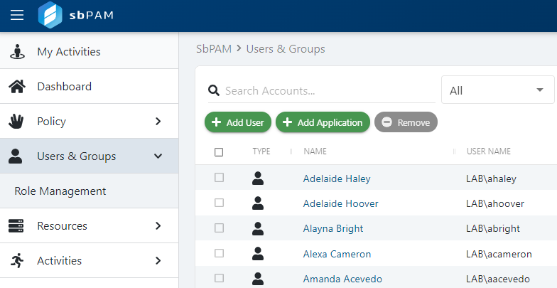
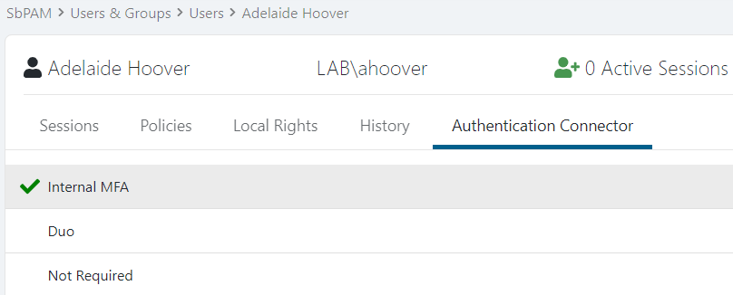

Summary
This article outlines how to disable Multi-factor Authentication (MFA) for individual users or groups of users in SbPAM.
IMPORTANT: Disabling MFA is not recommended per security best practices.
Instructions
Log-in to SbPAM as an Administrator, then navigate to Users & Groups in the sidebar navigation.

Click on a user or a group, then navigate to that principal's Authentication Connector tab.

Click Not Required, which will immediately disable the MFA requirement for the user or all users that are a member of the group.